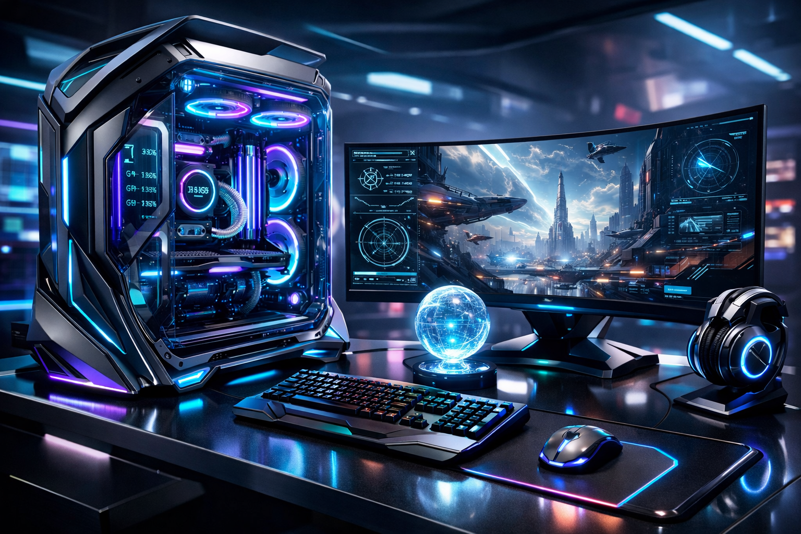

Architectures IA embarquées
Les architectures ASIC avancées intègrent désormais de puissants blocs d'IA au plus proche des capteurs, ouvrant la voie à l'autonomie des systèmes embarqués.
Source : AnandTech — Lire l'analyse
TechWatch Pro
Veille informatique hebdomadaire
Rapport hebdomadaire
Analyse premium des tendances hardware, sécurité, IA et infrastructures. Design évolutif pensé pour les équipes tech et les responsables innovation.

Catégories clés
Insights profonds
Sources vérifiées
Focus stratégique
Les architectures ASIC avancées intègrent désormais de puissants blocs d'IA au plus proche des capteurs, ouvrant la voie à l'autonomie des systèmes embarqués.
Source : AnandTech — Lire l'analyse
Des premiers tests montrent une hausse d'IPC significative tout en maîtrisant la consommation énergétique sur les architectures Ryzen de nouvelle génération.
Source : TechPowerUp — Voir le benchmark
[⚠️ ALERTE] Une faille matérielle affecte plusieurs générations de puces. Le déploiement de correctifs et de mitigations est prioritaire.
Source : The Verge — Action requise
Analyse par secteur
Benchmark haut de gamme : les dernières puces rivalisent sur le ray-tracing et l'IA dédiée, renforçant le positionnement des architectures dernière génération.
Source : Videocardz
Socket AM6 et DDR6 stimulent une refonte VRM. Ce changement impose une stratégie matérielle repensée pour les systèmes hautes performances.
Source : Cowcotland
PCIe Gen 6 s'invite dans les SSD externes, apportant des débits inédits pour la production 8K et les workflows professionnels exigeants.
Source : Hardwareand
Source : Phoronix
Support multimédia
Cliquer sur la vignette pour ouvrir l'image en taille réelle. Déposez vos visuels dans ./images.
Ajoute un fichier MP4 dans ./video pour le lire directement sur la page.
Exemple de nom de fichier : mon_video.mp4
Le fichier existant est ./son/16---until-the-end-of-time-unreleased-mix.mp3.
Si l'audio ne joue pas, indique si Edge affiche une erreur ou si le fichier est introuvable.
Liens référents
La semaine prochaine, plusieurs acteurs dévoileront leurs roadmaps ASIC, ce qui pourrait redessiner les priorités d'investissement en semi-conducteurs.
Restez prêt pour un événement industriel majeur et des annonces d'architecture haut rendement.